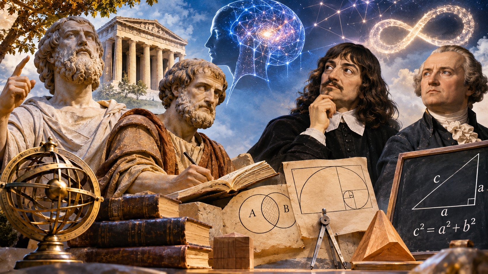
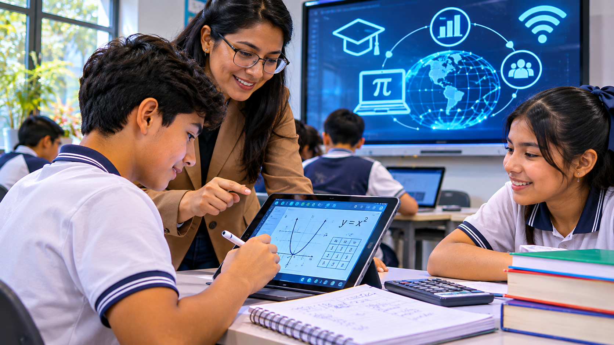

Ana
“La respuesta es 42”.
ESTACIÓN ACADÉMICA VIRTUAL · EQUIPO 2
Una feria matemática virtual para explorar patrones, analizar afirmaciones y construir argumentos que realmente prueben una idea.
COMPONENTE 1 · CONTEXTUALIZACIÓN
2 · 6 · 12 · 20 · 30 · ?
Observa, formula una regla y decide cómo justificarla.
“La respuesta es 42”.
“La respuesta es 40”.
“No basta con decir un resultado. Primero debemos explicar qué regla utilizamos”.
1 × 2 = 2 · 2 × 3 = 6 · 3 × 4 = 12 · 4 × 5 = 20 · 5 × 6 = 30 · 6 × 7 = 42.
42 es el siguiente término bajo esta regla. Una cantidad finita de términos no determina una única regla; debemos expresar la regularidad que suponemos y justificarla.
En matemática, encontrar una respuesta es importante, pero explicar por qué funciona es lo que permite construir conocimiento.
COMPONENTE 2 · DESARROLLO CONCEPTUAL
Proceso de identificar relaciones, analizar información, reconocer patrones y usar conocimientos para llegar a conclusiones.
Ejemplo: 3, 6, 9, 12, 15, … continúa 18 porque cada término aumenta 3.
Explica por qué un procedimiento, resultado o afirmación tiene sentido matemáticamente.
Ejemplo: 4 + 6 = 10 y 8 + 12 = 20 sugieren que la suma de pares es par; los ejemplos aún no justifican todos los casos.
Razonamiento lógico y fundamentado que establece una afirmación general usando definiciones, propiedades y reglas lógicas.
Convierte una conjetura en conocimiento justificado.
Sean dos números impares: a = 2m + 1 y b = 2n + 1.
Pregunta qué son los objetos matemáticos: ¿se descubren o se construyen? El platonismo los concibe como existentes independientemente; el formalismo destaca los sistemas y reglas. Son perspectivas, no una respuesta única.
Estudia cómo se construye y valida el conocimiento: observación, conjetura, argumentación, demostración y validación. Observar triángulos sugiere 180°, pero la geometría euclidiana lo fundamenta.
Usa proposiciones e inferencias válidas: si los divisibles entre 2 son pares y 18 es divisible entre 2, entonces 18 es par.
COMPONENTE 3 · INTEGRACIÓN DE APRENDIZAJES
Desde las primeras civilizaciones hasta la investigación y la innovación en educación matemática.
¿Cómo ha evolucionado el pensamiento matemático y cómo se relaciona con nuestra manera de razonar, argumentar y demostrar?
Sesión 1 de 7
SESIÓN 1
La matemática es una construcción cultural: surgió de necesidades humanas concretas como contar, medir, comerciar, construir y registrar cantidades. Las primeras civilizaciones desarrollaron métodos para organizar sus actividades y reconocer regularidades.
Para registrar sacos de grano, una comunidad podía hacer una marca por cada saco y agruparlas de diez en diez. Esa necesidad de contar y organizar cantidades es una forma inicial de razonamiento matemático.
Conexión con el Equipo 2: razonar comienza al analizar una situación, establecer relaciones y proponer una solución que pueda justificarse.
SESIÓN 2
Contenido de esta sesión por desarrollar en la siguiente actualización.

Imagen 3 · filosofía y pensamiento matemáticoSESIÓN 3
Contenido de esta sesión por desarrollar en la siguiente actualización.
SESIÓN 4
Contenido de esta sesión por desarrollar en la siguiente actualización.
SESIÓN 5
Contenido de esta sesión por desarrollar en la siguiente actualización.

Imagen 6 · educación y sociedad digitalSESIÓN 6
Contenido de esta sesión por desarrollar en la siguiente actualización.
SESIÓN 7
Contenido de esta sesión por desarrollar en la siguiente actualización.
COMPONENTE 4 · RETO INTERACTIVO
En el laboratorio de informática hay una caja fuerte que protege materiales tecnológicos. Resuelve los cuatro desafíos para abrirla.
La primera cifra es el doble de la tercera.
La segunda cifra es una unidad mayor que la tercera.
La suma de las tres cifras es 17.
2, 6, 12, 20, 30, ?
“La suma de dos números impares siempre es par”.
“Si una propiedad se cumple en cinco ejemplos, entonces es verdadera para todos los números”.
¡FELICITACIONES! HAS COMPLETADO LOS CUATRO RETOS MATEMÁTICOS.
COMPONENTE 5 · CONCLUSIÓN REFLEXIVA
Razonar antes de responder permite distinguir una conjetura de una conclusión fundamentada. Comprobar ejemplos ayuda a explorar; demostrar explica por qué algo vale en todos los casos.
La argumentación comunica las ideas y la demostración justifica su validez. Como futuros docentes, es importante enseñar a justificar, no solo a repetir procedimientos.
La matemática no consiste únicamente en encontrar respuestas, sino en comprender cómo y por qué llegamos a ellas. El razonamiento nos permite analizar situaciones, la argumentación nos ayuda a explicar nuestras ideas y la demostración nos permite justificar la validez de nuestras conclusiones. Como futuros docentes, tenemos la responsabilidad de promover una enseñanza que no se limite a repetir procedimientos, sino que motive a los estudiantes a pensar, cuestionar, argumentar y construir conocimientos matemáticos.
RECURSOS DE APOYO PARA LA EXPOSICIÓN